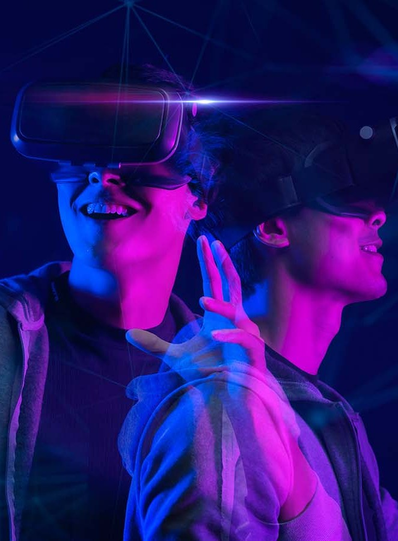

Preview the cut before you commit. The Simulate module renders a virtual laser cutting operation so you can perfect every parameter.
At the heart of every cut is the path the laser will follow. r3Design calculates and displays this path in the simulation environment, showing you the exact sequence of moves. You can adjust the feed rate, acceleration and corner handling in real time. Slow down for intricate corners or speed up on straight runs, the toolpath preview updates immediately.
Use the step-through mode to watch the head traverse each segment of your design. A slider lets you scrub through the operation to focus on specific areas. Compare multiple path strategies side by side to see how different optimizations, such as grouping internal cuts before outlines, affect total cutting time and quality.
Different materials react uniquely to laser energy. The simulation engine includes profiles for common substrates such as acrylic, plywood, cardboard and thin metals. Adjust power, speed and frequency to see how each setting influences kerf width, edge quality and heat affected zones. Our thermal model takes into account heat buildup during continuous cuts to help you avoid burns or warping.
For layered constructions, you can assign a material to each line or shape. When the simulation runs, you’ll see each layer cut in order, with the correct parameters applied automatically. This detailed feedback ensures that what you see in VR will match your physical results when you move to the laser cutter.
The Simulate module isn’t just about show, it’s a safety tool. It warns you of potential collisions, overcuts and unsupported material. If a path crosses an area without a backing board, the system highlights the risk. It also checks for overlapping cuts that might weaken the structure or cause burn-through. Every warning includes suggestions on how to resolve the issue, such as reordering lines or adding tabs.
You can also set up evacuation zones and hold-down points. The simulation will show clamps or pins and verify that the laser head clears them. For those working with fume extraction, estimated smoke generation and airflow patterns can be visualized to ensure your workshop stays safe.
Consider cutting a custom display stand from 3 mm acrylic. After designing the parts in Visualize and extruding them in Create, you import them into Simulate. You choose an acrylic profile, set the feed rate to 6 mm/s and laser power to 70 %. As the simulation plays, you can see a fine blue line tracing the outlines. You notice that the slots for assembly are cutting too quickly, causing slight melting. By lowering the speed on those lines and adding a dwell time at corners, the kerf becomes crisp and accurate.
Once satisfied, you can export G-code directly from the simulation to your physical laser cutter or return to earlier modules to make further adjustments. The entire process takes place within VR, keeping you immersed and informed.
